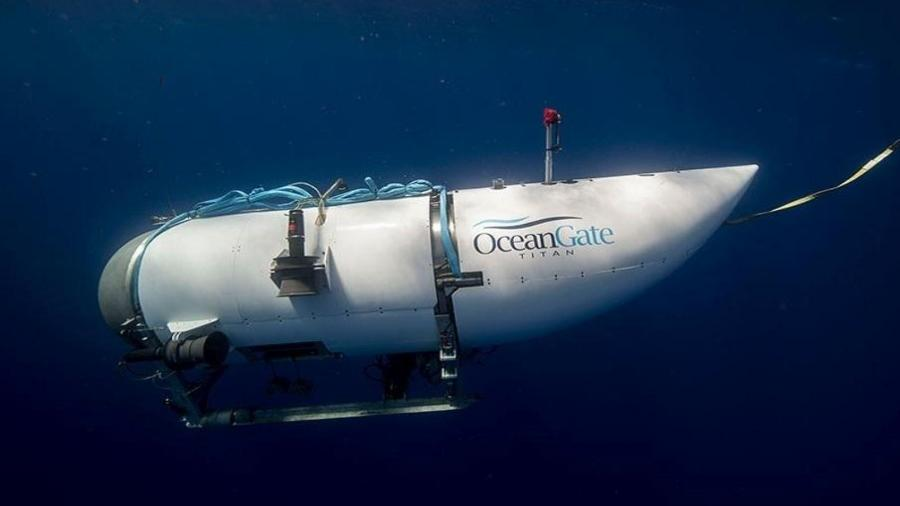

Murilo Zangari da Silva
29/11/1989
Analista de Infraestrutura
Bolo de chocolate
- 2 xicaras de farinha de trigo
- 3 ovos
- 2 xicaras de açucar
- 1 colher de café de fermento
- 1 xicara de chocolate em pó
- 2 xicaras de leite
Modo de Preparo
- Pre-aqueça o forno por 20 minutos a 180 graus
- Misture com uma colher todos os ingredientes secos
- Leve essa mistura para a batedeira
- Acrescente os ingredientes liquidos
- Bata em velocidade media por 15 minutos
- Unte um forma do tamanho de sua escolha
- Após bater coloque com cuidado o conteudo na forma
- Apõs o termino retire do forno com cuidado e aguarde esfriar para desenformar
| Produtos |
Preço Unitário |
Quantidade em Estoque |
| HD SATA 80 GB |
R$ 85,00 |
35 |
| Pen Drive 2GB |
R$ 15,00 |
150 |
| Impressora Laser Colorida |
R$ 613,99 |
18 |
| Monitor LCD 17 |
R$ 309,00 |
41 |
Submarino que iria ao Titanic desaparece
Submarino desaparecido
